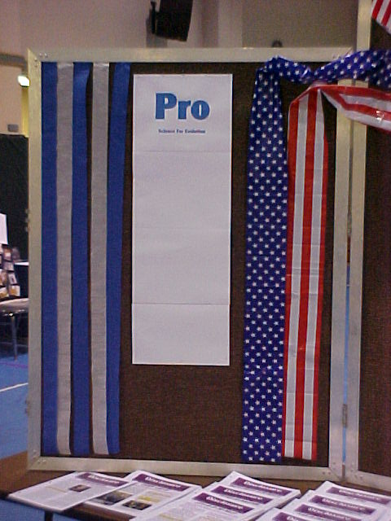

| About Us - November 2007 |
| by Do-While Jones |
We asked people to vote for or against the theory of evolution at the 2007 Community Dinner.
At the November 2007 Community Dinner, we decorated our booth with an election theme ("Evolution Election") and encouraged people to vote for or against the theory of evolution.
Although many people came to eat and watch the entertainment, only a small portion of those people came into the area where about two dozen non-profit groups, including Science Against Evolution, had booths set up. Consequently, only 21 ballots were cast. We know the results (5 for evolution and 16 against) are statistically insignificant. We weren't trying to determine what percentage of the people in Ridgecrest believe in evolution. It was just a gimmick to start conversations with people who came to the booth.
Although the actual numbers aren't significant, the things that people said and wrote on their ballots are important.
People were given two choices. "I DON'T believe all living things evolved from a common ancestor," and "I believe all living things evolved from a common ancestor BECAUSE ...". We phrased the question this way because we were trying to avoid the confusion associated with the vague term, "evolution." Certainly one can breed varieties of dogs, horses, roses, corn, etc. These small variations are sometimes called "microevolution" or, in some cases, simply "evolution." Microevolution is a real process that has been observed scientifically. There is no controversy over microevolution. The debate is whether or not reptiles can grow breasts and become mammals, or whether dinosaurs can turn into hummingbirds. That's why we specifically used the phrase "all living things evolved from a common ancestor." We wanted to start conversations about macroevolution, which is controversial.
We were surprised that people who do not believe in evolution desperately wanted to claim that they did. For example, one person modified the question, striking out some words and adding the words we have shown in italics as follows:
|
I believe [strike out "all living things"] humans evolved from a common ancestor Adam and Eve because the Bible states it. And it is the truth given to us from God himself. |
Several other people argued with us that descent from Adam and Eve is actually evolution. It seemed to us that these people had a passionate desire to say they were Christians who believe in evolution, perhaps because they didn't want to appear "anti-scientific." They wanted to change the meaning of the word, "evolution," just so they could say they believed it. That was really eye opening.
Another striking thing we discovered was that people who were against evolution tended to be enthusiastic and vocal about their rejection of evolution. We could not stop them from telling us why they did not believe in evolution. On the other hand, we had to try really hard to pry out of evolutionists any reason at all for their belief.
You don't need a reason NOT to believe. If you don't believe in Santa, you need not produce calculations as to how much Santa's sleigh would weigh, how little time he would have at each house, or the aerodynamic impossibility of flying reindeer. It is sufficient to say that the Santa legend is scientifically absurd and let it go at that. But if you really do believe Santa visits every house in the world on Christmas Eve, you should be able to justify your belief.
You don't need a reason not to believe that dinosaurs evolved into hummingbirds. It is sufficient to say that it is scientifically absurd. But, if you do believe that dinosaurs really did evolve into hummingbirds, you should have some rational basis for that belief. The purpose of the ballot was to try to determine why otherwise rational people would actually believe in macroevolution.
Of the five people who cast ballots in favor of evolution, one simply refused to give any reason at all. That person actually marked, "DON'T believe" and crossed it out before marking "believe." That person seemed very confused. But we counted it as one of the five votes for evolution.
One person wrote,
|
I believe all living things evolved from a common ancestor BECAUSE there are people in third world countries with 44 chromosomes. "We" currently have 46. I'm looking forward to 48. |
We swear that's exactly what was written on the ballot. (Even the quotes around "We".) Unfortunately we didn't talk to the person who cast that ballot. We were probably talking to someone else at the time.
It is true that human beings have 46 chromosomes. We have absolutely no idea where this person got the idea that people in third world countries have 44 chromosomes. Maybe we are reading too much between the lines, but his or her response seems to have a racial undertone. This person seems to believe that white people are more highly evolved than black people, and therefore have more chromosomes. Our biggest regret about the Dinner is that we didn't talk to this person while he or she was casting his ballot. We wonder what he or she would have said if we had told him or her that chimpanzees have 48 chromosomes.
We hesitated to share this response with you because it is possible that some creationist actually cast this ballot, pretending to be a very stupid person who believes in evolution. But, we promised we would publish every defense of evolution that we received, and we have the actual ballot. We don't think this response is representative of most evolutionists.
A more reasonable response was this one:
|
I believe all living things evolved from a common ancestor BECAUSE on a micro level it occurs. On a macro level, it takes more time but change in any species is inevitable. |
He or she is mostly correct. Genetic variation and natural selection can produce a segment of the population that has slightly different characteristics than the rest of the population. Some limited change in species is inevitable. This person does not understand that microevolution is the result of LOSS of genetic information; but macroevolution requires ADDITION of genetic information. Evolutionists like to argue that, given enough time, lots of small changes add up without limit to big changes. But there is a limit, as we showed in our essay, "The Kentucky Derby Limit."
One person proudly responded with a phrase he learned many years ago:
|
I believe all living things evolved from a common ancestor BECAUSE ontogeny recapitulates phylogeny. |
This memorable phrase was coined in 1874 by Ernst Haeckel to express the idea that an embryo in the womb retraces its evolutionary history as it develops. That is, the human embryo has a fish stage, then an amphibian stage, then a reptilian phase, etc., on its way to becoming a real human baby. The more advanced a creature is, the more stages it passes through as it develops. Haeckel drew some famous fraudulent pictures showing the similarity of the embryos of different creatures to "prove" his point.
In 1993, evolutionist Richard Milner wrote,
|
... Haeckel's "Biogenetic Law": Ontogeny recapitulates phylogeny. That famous phrase, memorized by generations of uncomprehending schoolchildren, means that the fetal development of an individual (ontogeny) is a speeded-up replay of millions of years of species evolution (phylogeny). In other words, a human embryo passes through various stages during its nine months in the womb; invertebrate; fish; amphibian; reptile; mammal; primate; ape; man. A fascinating concept, but the "law" is untrue and was rejected by biologists around 1900. Nevertheless, it has become embedded in many school courses and textbooks and continues to be taught. 1 |
Ten years ago, when the Haeckel's faked pictures were still being used in public school textbooks, Michael K. Richardson (department of Anatomy and Developmental Biology, St. George's Hospital Medial School, London, United Kingdom) co-authored a paper that appeared in Research News, 5 September 1997, page 1435, objecting to their use 97 years after they had been shown to be "inaccurate" (to put it delicately). Scientists now have actual photographs of embryos, and know they don't look anything like Haeckel's artistic "proof." We have addressed this fraud in detail in previous essays. 2
We saved the fifth and final pro-evolution ballot for last because it is the most representative of what we hear in person and through email from evolutionists. Here it is:
|
I believe all living things evolved from a common ancestor BECAUSE there are DNA evidences. And molecules were "started" by chance. Random hits leading to some structures that can be developed into a bigger and more complex structure. If it was all God's work, why would he have chosen only Earth? Is it that our lives only seem as such from our point of view? What about ocean weather, insects, and all the living things? Why do we have so much diversity? |
When talking with her we also discovered that she believed the fossil record proved evolution. I don't think she believed me when I told her that Darwin saw the fossil record as one of the strongest arguments against evolution. Without having the book in hand I could not show her that Darwin began chapter 6 of Origin of Species by saying,
|
LONG before having arrived at this part of my work, a crowd of difficulties will have occurred to the reader. Some of them are so grave that to this day I can never reflect on them without being staggered; but, to the best of my judgment, the greater number are only apparent, and those that are real are not, I think, fatal to my theory. These difficulties and objections may be classed under the following heads:-Firstly, why, if species have descended from other species by insensibly fine gradations, do we not everywhere see innumerable transitional forms? Why is not all nature in confusion instead of the species being, as we see them, well defined? |
Darwin believed that the difficulty was only "apparent" because the fossil record of his day was so incomplete. Today, with a much more complete fossil record, the difficulty is known to be real, not apparent. Furthermore, the theory of Punctuated Equilibrium was proposed as a desperate attempt to explain how the theory of evolution might still be true despite the contradictory evidence in the fossil record.
This woman was perhaps the most typical evolutionist. She believes there is DNA evidence for evolution, but she doesn't know what it is. She believes random chance can produce useful, complex structures, but she doesn't know how. She thinks there are transitional fossils, but she doesn't know what they are. She is sure there must be scientific evidence for evolution because "scientists say" there is, but she doesn't know what that evidence is. But mostly, she believes in evolution because she doesn't believe in God, and evolution is (in her mind) the only other explanation.
One of the last things she said to me as she was leaving the booth was, "I have to believe in evolution because I am a scientist." She is obviously a smart woman. We hope she will use her brain to evaluate all the things she has been told and has accepted without question since she was a little girl.
Yes, we did our best to put evolutionists on the spot and get them to try to defend their views. Admittedly it was slightly unfair because they were caught off-guard and not prepared to respond. But we weren't trying to win any victory at that moment. All we wanted to do was to get them to realize that they didn't have any good reason for believing in evolution. We hope that they went home thinking, "You know, I should have said ..." expecting to come up with a really snappy answer because it is always easier to think of those things later. But we think that later they will realize that there is nothing they could have said because there are no good scientific arguments in favor of evolution. That's when they will convince themselves that the theory of evolution is false. We don't really have to say anything because, as we showed in our booth, science is against evolution.
 |
|---|
| Quick links to | |
|---|---|
| Science Against Evolution Home Page |
Back issues of Disclosure (our newsletter) |
| Web Site of the Month |
Topical Index |
Footnotes:
1
Milner, The Encyclopedia of Evolution, 1993, "Biogenetic Law", page 44
2
Disclosure, April 1999, Scientific Honesty and
Disclosure, June 2006, Evo Devo and the Biogenetic Law